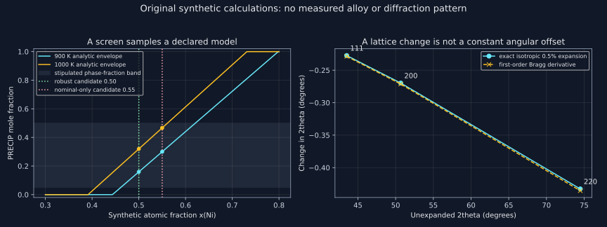

22. High-throughput design, driving forces and phase identification
A screening calculation does not discover a material merely by returning a short list. It creates a conditional prediction: these compositions, evaluated with these phases and this database, satisfy these numerical tests. The useful next step is to ask which parts of that statement survive a change of temperature, a model discrepancy, or an independent measurement. The same discipline makes CALPHAD useful for characterization: a predicted phase is a candidate to test, rather than a replacement for diffraction and chemical evidence.
Source and execution scope. Both complete local machine transcripts of lessons 56–57 were read. They develop higher-order sections, high-throughput alloy selection, binary and Gibbs-energy heuristics, transformation driving forces and CALPHAD-assisted diffraction interpretation. The published screening cases are identified below with bounded primary-source reading. Their commercial databases, complete input archives and experimental results were not rerun. Our downloadable program actually executes pycalphad 0.11.1 on an original synthetic two-branch database, plus independent combinatorial, variational and diffraction checks. The CU/NI identifiers are bookkeeping species in that teaching model, not an assessed Cu–Ni alloy.
22.1 Specify the design space before counting its survivors
Lesson 56, 01:56–10:49, including higher-order sections and elemental additions.
For C substitutional components, an atomic composition is a point in the simplex \(x_i\ge0,\ \sum_i x_i=1\). A section that adds one element with fraction s while keeping the others in a prescribed ratio is a one-dimensional path through that simplex. It does not represent every composition of the multicomponent alloy. For three equal background components, \(x_1=x_2=x_3=(1-s)/3\); temperature adds another plotted coordinate. The resulting picture can be informative while sampling a very small part of the full design space.
The recording uses additions of Cu, Al, Mn and V to illustrate changes in competing solid solutions, ordered structures, liquid and sigma-type phases. These are particular calculated sections, not universal element-by-element rules. An element's pure crystal structure does not determine the structure of an alloy containing it. The relevant comparison includes phase-specific reference energies, configurational terms, interactions, partitioning and all competing phases at the declared temperature. A label such as “FCC stabilizer” summarizes a context; it is not a transferable scalar that can simply be added across unrelated diagrams.
Likewise, a high ideal mixing entropy is not a theorem of single-phase stability. For an ideal disordered solution, \(s_{\rm mix}=-R\sum_i x_i\ln x_i\), with maximum \(R\ln C\) at equal fractions. One proof applies the concavity of \(\ln\): \(\sum_i x_i\ln(1/x_i)\le\ln\sum_i x_i(1/x_i)=\ln C\) when all fractions are positive. Zero fractions are handled by continuity on the smaller support. This bounds one contribution to one model. Ordered compounds or decomposed assemblages have their own enthalpy and entropy; a complete Gibbs comparison can favor them despite this ideal contribution.
A reproducible search therefore declares the palette, bounds, composition basis, increments and treatment of absent elements. Five components with a 5 atomic-percent increment can be represented exactly by integers \(q_i\) with \(\sum q_i=20\). If every component is present and lies between 5 and 50 atomic percent, impose \(1\le q_i\le10\). Integer enumeration avoids duplicate or missing points caused by rounding decimal sums. It also gives an independently checkable count before any thermodynamic calculation starts.
22.2 A grid count and a calculation record are different objects
Lesson 56, 10:49–21:39, followed by original counting and reproducibility audits.
For the positive five-component grid, let \(y_i=q_i-1\). Then \(\sum y_i=15\) with \(0\le y_i\le9\). Without the upper bound, stars and bars gives \(\binom{19}{4}\). A specified violation \(y_i\ge10\) leaves a nonnegative sum of five, giving \(\binom94\). Two violations are impossible because they would require a sum of at least twenty. Thus
\[ N_{5\text{--}50}=\binom{19}{4}-5\binom94=3246. \]If zero-valued components are allowed instead, \(0\le q_i\le10\) and the same total gives \(\binom{24}{4}-5\binom{13}{4}=7051\). These are different design questions. The latter contains lower-component faces as well as genuine five-component interiors. Counting the palette rather than the positive support would mislabel some of its alloys.
Feng and colleagues' 2021 primary paper, printed pages 2 and 8 inspected, reports an Al–Cr–Fe–Mn–Ti screen with the sequence 3246 → 1168 → 44 → 8. Its discussion specifies 5–50 atomic percent per element. The agreement with our count reproduces that combinatorial boundary choice, not their thermodynamic input archive or experimental performance. The paper also reports discrepancies requiring improvement of L2₁ stability in its database; a surviving composition is therefore a reason for focused testing.
The unrestricted number of equimolar subsets of sizes three through six from 26 elements is \(\sum_{k=3}^{6}\binom{26}{k}=313560\). This is not the number of records in an actual database-dependent study. The inspected primary text of Senkov and colleagues' 2015 study distinguishes 134547 processed calculations, 5540 passing its complete-binary-description filter, 4983 unique alloys among them, and 51 selected candidates. Multiple databases can generate repeated alloy identities, and database availability restricts the processed pool. Our unrestricted count is not a correction of their recorded workload.
Keep an alloy identifier distinct from an alloy–database–condition identifier. At minimum the latter must specify ordered components, fractions and basis, temperature, pressure, permitted phase descriptions, database bytes/version, engine and solver settings. A failed calculation is an unknown result with a reason, not evidence that a physical criterion failed. Conversely, a successful exit is not enough: verify phase amounts, elemental balance and the actual criterion values before assigning a pass.
22.3 A numerical filter needs units, tolerances and a declared temperature domain
The lecture's precipitation-strengthened example asks for a suitable primary solution and a bounded amount of an ordered phase at selected temperatures. Those criteria target a useful microstructural family; they do not calculate creep strength, precipitate size, coarsening time or fracture resistance. An equilibrium phase fraction alone does not specify its morphology or spatial distribution. A design decision needs the property and processing models appropriate to its application.
Temperature conventions deserve unusual care. Feng's printed page 2 explicitly defines its fractional-temperature screening convention using Celsius values. That is an operational rule in that study; it must not silently be renamed an absolute homologous-temperature ratio. A physical ratio \(T/T_m\) uses kelvin. For a stipulated \(T_m=1250\,^\circ{\rm C}\), the paper-style operation \(0.8(1250)\) gives 1000 °C, while \(0.8(1250+273.15)-273.15\) gives 945.37 °C. These differ by 54.63 °C. Reproduction requires preserving the stated rule; adopting a different physical criterion requires documenting the change.
Also distinguish liquidus, where the first equilibrium solid appears during cooling, from solidus, where the last liquid disappears. A single solid phase at the final freezing endpoint does not by itself prove that it was the first solid. Read the phase sequence and state which event defines the temperature used in a filter. Near an endpoint, use a declared small phase-amount tolerance rather than interpreting floating-point equality to one as a physical law.
Two sampled temperatures cannot certify an entire service interval. The perfectly continuous fraction \(f(T)=0.1+0.6\sin^2[\pi(T-T_a)/(T_b-T_a)]\) equals 0.1 at both ends and 0.7 at the midpoint. It passes a 0.05–0.5 endpoint test and fails inside. This original counterexample does not reconstruct a particular published phase path; it exposes the additional work needed for a statement about every temperature.
A useful sufficient certificate is available if an independently justified derivative bound exists. Suppose \(|f'|\le L\) throughout the interval and sampled temperatures include both endpoints with maximum gap h. Every interior temperature is within \(h/2\) of a sample. The mean-value bound gives \(|f(T)-f(T_j)|\le Lh/2\). Numerical uncertainty \(\epsilon\) and a stipulated model-discrepancy bound \(\delta\) enlarge the safety margin to \(Lh/2+\epsilon+\delta\). All sample intervals must stay inside the acceptable band by that amount. Without such a bound, a refined scan supplies sampling evidence, not a proof that an arbitrarily narrow phase field is absent.
22.4 Compare the right Gibbs quantities
Lesson 57, 02:01–10:28, including binary heuristics, competing phases and unmixing.
The source moves from widths of binary solution fields to Gibbs-energy comparisons. The useful advance is to ask how close a candidate phase is to its competitors, rather than reject an element because one binary diagram looks unfavorable. However, comparing the depths of two different binary mixing curves is a heuristic. Their endmember references, amounts of elements and available competing phases differ. It does not itself construct the multicomponent equilibrium envelope.
At a common T,p and overall composition z, a homogeneous parent phase M has tangent line \(\ell_z(x)=g_M(z)+g_M'(z)(x-z)\). Consider making an infinitesimal amount \(\lambda\) of product P at composition x while the remaining parent adjusts to \(x_M(\lambda)=(z-\lambda x)/(1-\lambda)\). This preserves the bulk composition. The molar mixture energy is \(G(\lambda)=(1-\lambda)g_M[x_M(\lambda)]+\lambda g_P(x)\). Differentiating at zero gives
\[ G'(0)=g_P(x)-\ell_z(x),\qquad D_P(z)=\max_{x\ {\rm feasible}}\{\ell_z(x)-g_P(x)\}. \]Thus \(D_P>0\) supplies a bulk first-order energy decrease through some composition-changing product. A pointwise comparison \(g_P(z)-g_M(z)\) misses that possibility. The derivation assumes infinitesimal phase amount, an admissible product composition and no additional surface, elastic or kinetic cost. A positive bulk driving force neither proves a nucleus forms nor supplies its rate. Those additional models must retain the same energy and amount conventions.
For an original exact example, take \(g_M(x)=10000(x-0.3)^2\) and \(g_P(x)=10000(x-0.7)^2-300\) J/mol. At parent z=0.3, its tangent is zero and the best product is x=0.7, with \(D_P=300\) J/mol. Yet the product at the unchanged composition is 1300 J/mol above the parent. At product amount 0.1, balance moves the parent to 0.255555556 and total energy falls by 12.222222222 J/mol. At amount 0.2, the same construction instead lies 20 J/mol above the original parent. The infinitesimal direction is favorable; it is not a license to choose an arbitrary finite amount.
A common elemental affine reference subtraction \(q(x)\) changes both \(g_P\) and the parent tangent by the same \(q(x)\), so their difference and D are invariant. Subtracting a different phase's own mixing reference from each curve does not have that property. Likewise, if one phase is nonconvex, decomposition into two compositions of that same phase can lower energy. Two FCC composition sets can therefore be distinct coexisting phases despite sharing a lattice type; a phase label alone is not enough to identify their amounts or chemistry.
22.5 Execute a small screen with an independent thermodynamic certificate
Our synthetic database contains two ideal substitutional branches named MATRIX and PRECIP. Those names are labels, not asserted crystal structures. Set \(D=6000\) J/mol, \(\delta(T)=8(1100-T)\) J/mol and \(q(x)=(1-x)\ln(1-x)+x\ln x\):
\[ g_M=Dx+RTq(x),\qquad g_P=D(1-x)+\delta+RTq(x). \]The linear temperature coefficient has units J/(mol K). The TDB uses CU/NI identifiers solely to supply a complete runnable model. It has no fitted real-alloy phase assessment. We evaluate seven atomic fractions \(x_{\rm Ni}=0.35,0.40,\ldots,0.65\), at 900 and 1000 K. Fourteen actual pycalphad equilibrium calls retain phase identities, compositions and amounts. The engine's own \(R=8.3145\) J/(mol K) is used in the analytic comparison.
The chemical potentials of an ideal branch follow from \(g-xg'\) and \(g+(1-x)g'\). If MATRIX and PRECIP coexist at a and b, equality gives \(1-a=u(1-b)\), \(a=wb\), with \(u=e^{(D+\delta)/(RT)}\) and \(w=e^{(\delta-D)/(RT)}\). Therefore
\[ b=\frac{u-1}{u-w},\qquad a=wb,\qquad f_P(z)=\frac{z-a}{b-a}\quad(a\le z\le b). \]Both branches have positive curvature \(RT/[x(1-x)]\). Their equal tangent is consequently a global supporting line for both complete branches. This is a global equilibrium certificate for this declared two-branch model, rather than an inference from solver convergence alone. The stated temperatures have \(-D<\delta The executed contacts are (0.443488203,0.798445520) at 900 K and (0.391289385,0.731327105) at 1000 K. At each two-phase point, the code checks the global support energy, both contact compositions and the lever fraction. At every point it checks total phase amount and solute balance. Empty padded vertices are excluded explicitly; merely counting array slots would count absent phases. Require \(0.05  Lesson 57, 11:08–19:07, including phase compositions and shifted diffraction patterns. The recording first compares calculated phase fractions and compositions with a microstructure, then revisits an ambiguous powder-diffraction interpretation. Its general lesson is valuable: phase-equilibrium information can suggest structures that a blind best-match search overlooks. The exact proprietary calculations, uncertain compound labels in the ASR and quantitative measured patterns were not recovered for reproduction. The synthetic example below tests the logic without pretending to re-identify those specimens. For a cubic phase, \(d_{hkl}=a/\sqrt{h^2+k^2+l^2}\) and first-order diffraction obeys \(2d\sin\theta=\lambda\). With known indexing and wavelength, increasing a shifts every allowed reflection toward lower \(2\theta\). Differentiating at fixed wavelength and reflection gives The differential is in radians. Equal fractional lattice expansion does not produce one constant angular shift for every peak. At \(\lambda=0.15406\) nm and a changing from 0.3600 to 0.3618 nm, the exact shifts for 111,200,220 are −0.227398°, −0.269791° and −0.432799°. The first-order predictions differ slightly because the expansion is finite. This pattern of angle dependence helps distinguish a lattice change from a constant instrumental zero offset. A single peak cannot separately determine both quantities. In the model \(t_h=2\arcsin[\lambda\sqrt{h^2+k^2+l^2}/(2a)]+z_0\), any admissible a can be accompanied by a zero offset chosen to match one measured t. For several distinct indexed reflections, the Jacobian has rows \((-2\tan\theta_h/a,\ 1)\), in consistent angular units. Distinct \(\theta_h\) give rank two, establishing local identifiability of a and \(z_0\) within this model. The program creates five exact synthetic peak positions with a=0.3618 nm and \(z_0=0.04^\circ\). For each trial a it eliminates the best common offset analytically as the mean angular residual, then performs a bounded one-dimensional search. It recovers both prescribed values with squared angular residual below \(10^{-20}\ {\rm degree}^2\). This demonstrates a conditional fit with known indexing and no measurement noise. It is not a proof that the phase indexing, phase count or zero-offset model is correct for an experimental pattern. Peak positions also respond to strain, and peak widths have sample and instrumental contributions. The actually inspected introduction and section 2 of Beyer, Roth and Iversen's 2022 primary study distinguishes coherent-domain size, microstrain and instrumental broadening. A broad peak does not uniquely measure a grain size or establish a second phase. A thermodynamic candidate should be checked against multiple positions, intensities and absences, chemistry, preparation history and appropriate microscopy. Allowing arbitrary independent shifts to every predicted line would discard much of the crystallographic test. Nor can a database exclude a phase absent from its own descriptions. Inspecting binary compounds can generate hypotheses about extended ternary phases, but their stability, solubility and lattice changes require evidence. Ordering a list of unrelated binary compounds by their raw molar energies is not a universal ranking: different stoichiometries require a common conserved assemblage or a specified chemical-potential reservoir. Use the tangent-plane comparison or a full equilibrium problem when its inputs exist. If they do not, preserve the candidates as hypotheses. The practical sequence is now explicit. Declare the search domain and count it; evaluate well-defined states; retain convergence and balance evidence; apply numerical criteria with their units and sampled domain; and test selected predictions experimentally. Store rejected, accepted and unknown outcomes separately. If a later assessment introduces a missing phase, rerun the affected comparisons rather than assume that a smaller residual in the old model repairs the omission. Composition basis remains part of that chain. Phase mole, mass and volume fractions are different quantities unless the corresponding molar masses and volumes happen to match. A nominally equiatomic bulk alloy need not have equiatomic coexisting phases. A measurement may average several nanoscale regions, while an equilibrium output describes individual phase compositions. Comparison requires a matching quantity and sampling scale, not just similar-looking decimals. The program completes a deliberately small serial screen, not a production orchestration system. The 3246-point grid count is executed; those 3246 alloys are not run through the engine. Only the fourteen declared synthetic binary cases are. No real strength, cost, oxidation resistance, kinetic stability or heat-treatment success is predicted. This separation makes the calculation useful: its actual outputs can be reproduced while the much larger scientific claim remains a question to investigate. Use the exact downloadable listing, its original teaching TDB and the book's pinned pycalphad 0.11.1 environment, with the project directory as the working directory. The displayed output was obtained by execution. The fitting residual is reported as a verified bound to avoid giving platform-dependent roundoff a physical interpretation. Derive the count for 5–50 atomic percent in 5-percent steps, and explain the change if absent components are admitted. Write fractions as \(q_i/20\). For all components present, \(1\le q_i\le10\) and their sum is twenty. After subtracting one from each, the sum is fifteen and the upper bound is nine. Stars and bars gives \(\binom{19}{4}=3876\); each of five disjoint violations leaves sum five and contributes \(\binom94=126\). Hence \(3876-630=3246\). With zeros admitted, start with \(\binom{24}{4}=10626\); each violation \(q_i\ge11\) contributes \(\binom{13}{4}=715\), and simultaneous violations are impossible. The count becomes \(10626-3575=7051\). Those extra points include lower-component faces. They are not additional genuine five-component alloys. For a melting value of 1250 °C, compare the two 0.8 operations. Then explain why two acceptable endpoint fractions do not prove an acceptable service interval. The Celsius operation gives 1000 °C. An absolute ratio gives \(0.8(1523.15)=1218.52\) K, or 945.37 °C. A reproduction must state which convention it follows; only the latter is invariant as an absolute-temperature ratio. The example \(f=0.1+0.6\sin^2[\pi(T-T_a)/(T_b-T_a)]\) gives 0.1 at both ends but 0.7 at their midpoint. A 0.05–0.5 criterion therefore fails inside. The claim can be strengthened by checking intermediate equilibria, tracking boundaries, or proving a derivative bound with a sufficiently fine grid and safety margin. Continuity alone is insufficient. Suppose the maximum temperature gap is h and \(|f'|\le L\). If numerical and stipulated model errors are bounded by \(\epsilon\) and \(\delta\), how far must each sampled estimate stay from each threshold? Because the endpoints are included, choose a nearest sample no more than h/2 away. The derivative bound contributes at most Lh/2 to the difference. The triangle inequality adds numerical and model terms, giving \(|f_{\rm physical}(T)-\widehat f(T_j)|\le Lh/2+\epsilon+\delta\), assuming each stated bound really applies throughout the domain. Every sampled estimate must lie inside the allowed interval by more than that sum for strict thresholds. If L or the discrepancy bound is unknown, the formula is conditional rather than a certificate inferred from the grid itself. Differentiate the balanced parent/product mixture and evaluate the quadratic example at product amounts 0.1 and 0.2. Balance requires \(x_M=(z-\lambda x)/(1-\lambda)\), so \(x_M'(0)=z-x\). Differentiating the mixture gives \(G'(0)=-g_M(z)+g_M'(z)(z-x)+g_P(x)=g_P(x)-\ell_z(x)\). At z=0.3 and x=0.7, the parent tangent is zero and the product minimum is −300, giving derivative −300 J/mol. At \(\lambda=0.1\), \(x_M=0.23/0.9=0.255555556\), and \(G=0.9(10000)(-0.044444444)^2-30=-12.222222222\). At \(\lambda=0.2\), \(x_M=0.16/0.8=0.2\), and \(G=80-60=20\). The first-order direction favors some small amount, while finite curvature can oppose a larger stipulated amount. No nucleation rate follows. Why does a common elemental affine subtraction preserve D, and why can separate phase-mixing references invalidate the comparison? Let \(q(x)=a+bx\). The transformed parent tangent is \(g_M(z)-q(z)+[g_M'(z)-b](x-z)=\ell_z(x)-q(x)\). The transformed product is \(g_P(x)-q(x)\), so their difference equals the old \(\ell_z(x)-g_P(x)\) for every x; its maximum is unchanged. If different phases subtract different functions \(q_M,q_P\), the difference gains \(q_P(x)-q_M(x)\), changing the inferred driving force. Deeper separately referenced mixing energies can therefore be useful descriptions of mixing within each phase without being a valid ranking of the competing phases. Derive the contact formula and use the actual 1000 K result to explain why x=0.55 is nominally acceptable but not robustly certified under the stipulated bound. For MATRIX, \(\mu_A=RT\ln(1-a)\), \(\mu_B=D+RT\ln a\). For PRECIP, \(\mu_A=D+\delta+RT\ln(1-b)\), \(\mu_B=\delta+RT\ln b\). Equalities give \(1-a=u(1-b)\), \(a=wb\), hence \(b=(u-1)/(u-w)\). Positive branch curvature proves that the shared tangent lies below each entire branch, establishing global support. At 1000 K the actual contacts give \(f_P=(0.55-0.391289385)/(0.731327105-0.391289385)\approx0.466744\). It is below 0.5, but adding 0.04 reaches 0.506744. A nominal pass is not a pass for every value in that uncertainty interval. It is not proof of actual physical failure either. The lower and upper margins must be checked at every declared condition. Differentiate Bragg's law for isotropic cubic expansion. Why does an identical fractional expansion produce different shifts for different reflections? At fixed wavelength, \(d\sin\theta\) is constant, so \(dd/d+\cot\theta\,d\theta=0\). Since the same indexed cubic spacing is proportional to a, \(dd/d=da/a\), yielding \(d(2\theta)=-2\tan\theta\,da/a\) in radians. Larger diffraction angles have larger tangent and therefore larger angular shifts. For a 0.5-percent expansion the code's first-order shifts are −0.228625°, −0.271291° and −0.435586° for 111,200,220; exact finite shifts are slightly smaller in magnitude. Multiplying the radian derivative by 180/π is essential before comparing with degrees. A single arbitrary common angular translation is not the same model as uniform lattice expansion. Can one indexed peak determine both a lattice parameter and a constant angular offset? What do five exact peaks establish in the constructed fit? One equation \(t=F_h(a)+z_0\) leaves a free parameter: choose any admissible a and set \(z_0=t-F_h(a)\). With several distinct angles, the rows \((F_h'(a),1)\) are not proportional because \(F_h'=-2\tan\theta_h/a\) differs across reflections. The Jacobian has rank two, giving local identifiability under known indexing. The constructed five-peak fit recovers 0.3618 nm and 0.04° with an actual residual bound. It does not certify an unknown structure or phase mixture, absence of strain, a correct instrument model or experimental uncertainty. Those require independent tests; the fit is conditional on the stated synthetic model. A calculation proposes two FCC composition sets. What comparisons would be more informative than accepting the best-matching single powder pattern? Retain both predicted phase compositions and amounts and verify the bulk elemental balance first. Compare measured chemical populations at an appropriate spatial resolution, stating whether their sampling averages more than one region. Test multiple indexed diffraction positions, relative intensities, absences and coherent lattice shifts, while accounting for instrumental offset and possible strain/broadening. Convert phase fractions to the same mole, mass or volume basis before comparison. Check whether the processing time and temperature could plausibly approach the calculated state. Search for unexplained peaks or chemistry that could indicate a missing candidate phase. None of these tests is guaranteed to settle an under-resolved sample, but they provide ways for the observations to contradict the proposed equilibrium rather than merely illustrate it. High throughput is most powerful when it accelerates an explicit question. The result is a reproducible set of conditional predictions, together with enough thermodynamic and measurement reasoning to choose the next experiment and recognize when the model must change.22.6 Let thermodynamics propose candidates that diffraction can refute
22.7 An evidence chain that survives automation
22.8 Run the exact program
"""Original screening and diffraction audits; synthetic phases, not an \
assessed alloy."""
from pathlib import Path
from itertools import product
from math import comb, exp, log, sin, cos, asin, sqrt, pi
import numpy as np
import pycalphad
from pycalphad import Database, equilibrium, variables as v
assert pycalphad.__version__ == "0.11.1"
R = float(v.R)
# Integer atomic-fraction grid: all five components present, 5 through 50 at.%.
grid = [q for q in product(range(1, 11), repeat=5) if sum(q) == 20]
with_zero = sum(sum(q) == 20 for q in product(range(11), repeat=5))
assert len(grid) == comb(19, 4) - 5 * comb(9, 4) == 3246
assert with_zero == comb(24, 4) - 5 * comb(13, 4) == 7051
print(
(
f"Five-component 5%-grid, positive / zero-allowed: "
f"{len(grid)}"
f", "
f"{with_zero}"
)
)
print(
(
f"Unrestricted 26-element equimolar subsets of sizes3--6: "
f"{sum((comb(26, k) for k in range(3, 7)))}"
)
)
tm_c = 1250.0
print(
(
f"0.8 times 1250 Celsius: operational="
f"{0.8 * tm_c:.3f}"
f" C; absolute-ratio="
f"{0.8 * (tm_c + 273.15) - 273.15:.3f}"
f" C"
)
)
print(
(
f"Endpoint-only fraction test: endpoints=.100,.100; interior="
f"{0.1 + 0.6 * sin(pi / 2) ** 2:.3f}"
)
)
# An infinitesimal product can partition while the remaining matrix conserves
# composition.
A, z, xp, advantage = 10000.0, 0.3, 0.7, 300.0
same_composition = A * (z - xp) ** 2 - advantage
print(
(
f"Parent tangent-plane advantage="
f"{advantage:.6f}"
f"; same-composition product penalty="
f"{same_composition:.6f}"
f" J/mol"
)
)
for amount in (0.1, 0.2):
xm = (z - amount * xp) / (1 - amount)
energy = (1 - amount) * A * (xm - z) ** 2 - amount * advantage
assert abs((1 - amount) * xm + amount * xp - z) < 1e-14
print(
(
f"Partitioned product amount="
f"{amount:.1f}"
f": matrix x="
f"{xm:.9f}"
f", total change="
f"{energy:.9f}"
f" J/mol"
)
)
# Execute a small batch with two ideal substitutional solution branches.
db = Database(str(Path("data/ch22_screening.tdb")))
D = 6000.0
temperatures = (900.0, 1000.0)
compositions = [j / 20 for j in range(7, 14)]
rows = {x: [] for x in compositions}
for T in temperatures:
delta = 8 * (1100 - T)
u, w = exp((D + delta) / (R * T)), exp((delta - D) / (R * T))
b = (u - 1) / (u - w)
a = w * b
mu_a = R * T * log(1 - a)
slope = D + R * T * log(a / (1 - a))
print(
(
f"Synthetic common-line contacts T="
f"{T:.0f}"
f" K: MATRIX="
f"{a:.9f}"
f", PRECIP="
f"{b:.9f}"
)
)
for x in compositions:
result = equilibrium(
db,
["CU", "NI"],
["MATRIX", "PRECIP"],
{v.T: T, v.P: 100000, v.N: 1, v.X("NI"): x},
calc_opts={"pdens": 200},
)
records = [
(str(p), float(c), float(n))
for p, c, n in zip(
result.Phase.values.reshape(-1),
result.X.sel(component="NI").values.reshape(-1),
result.NP.values.reshape(-1),
)
if p and np.isfinite(n) and n > 1e-9
]
assert abs(sum(n for _, _, n in records) - 1) < 1e-9
assert abs(sum(c * n for _, c, n in records) - x) < 1e-9
fraction = sum(n for p, _, n in records if p == "PRECIP")
analytic = max(0.0, min(1.0, (x - a) / (b - a)))
assert abs(fraction - analytic) < 1e-7
if a < x < b:
assert (
abs(float(result.GM.values.squeeze()) - (mu_a + slope * x))
< 1e-6
)
assert all(
abs(c - ({"MATRIX": a, "PRECIP": b}[p])) < 1e-7
for p, c, _ in records
)
rows[x].append(fraction)
nominal = [x for x, fs in rows.items() if all(0.05 < f < 0.5 for f in fs)]
# A stipulated +/-0.04 bound on each fraction; NOT an inferred uncertainty.
robust = [
x
for x, fs in rows.items()
if all(0.05 < f - 0.04 and f + 0.04 < 0.5 for f in fs)
]
for x, fs in rows.items():
print(
(
f"Synthetic xNi="
f"{x:.2f}"
f": fPRECIP900/1000="
f"{fs[0]:.6f}"
f","
f"{fs[1]:.6f}"
f"; nominal="
f"{x in nominal}"
f"; robust="
f"{x in robust}"
)
)
assert nominal == [0.5, 0.55] and robust == [0.5]
print(
(
"Executed equilibrium batch:14 cases, every mass/composition balance "
"and analytic fraction PASS"
)
)
# Classifier behavior for an absent calculation, not a claim of an actual
# solver failure.
def classify(values):
if values is None:
return "unknown"
return "pass" if all(0.05 < f < 0.5 for f in values) else "reject"
assert classify(None) == "unknown"
print("Deliberately absent result classified as unknown, not reject or pass")
# Synthetic angular diffraction data; known cubic indexing and wavelength.
wavelength, a0, true_a, zero = (
0.15406,
0.36,
0.3618,
0.04,
) # nm, nm, nm, degrees
squares = (3, 4, 8, 11, 12)
def angles(a):
return [
2 * asin(wavelength * sqrt(q) / (2 * a)) * 180 / pi for q in squares
]
old = angles(a0)
observed = [t + zero for t in angles(true_a)]
for q, old_t, new_t in zip(squares[:3], old[:3], angles(true_a)[:3]):
linear = (
-2 * sin(old_t * pi / 360) / cos(old_t * pi / 360) * (0.005) * 180 / pi
)
print(
(
f"Cubic h2+k2+l2="
f"{q}"
f": exact 2theta shift="
f"{new_t - old_t:.6f}"
f" deg; first-order="
f"{linear:.6f}"
f" deg"
)
)
# For each candidate a, the best common zero offset is the mean angular
# residual.
def fit_at(a):
residual = [o - t for o, t in zip(observed, angles(a))]
shift = sum(residual) / len(residual)
return sum((r - shift) ** 2 for r in residual), shift
left, right = 0.355, 0.367
gold = (sqrt(5) - 1) / 2
c = right - gold * (right - left)
d = left + gold * (right - left)
for _ in range(100):
if fit_at(c)[0] < fit_at(d)[0]:
right, d = d, c
c = right - gold * (right - left)
else:
left, c = c, d
d = left + gold * (right - left)
fitted = (left + right) / 2
sse, fitted_zero = fit_at(fitted)
assert abs(fitted - true_a) < 1e-11 and abs(fitted_zero - zero) < 1e-8
assert sse < 1e-20
print(
(
f"Synthetic five-peak joint fit: a="
f"{fitted:.9f}"
f" nm; zero="
f"{fitted_zero:.9f}"
f" deg; SSE<1e-20 deg^2"
)
)
print(
(
"Scope: no measured pattern, real-alloy screening, mechanical-propert"
"y prediction or thermal-history simulation"
)
)
Five-component 5%-grid, positive / zero-allowed: 3246, 7051
Unrestricted 26-element equimolar subsets of sizes3--6: 313560
0.8 times 1250 Celsius: operational=1000.000 C; absolute-ratio=945.370 C
Endpoint-only fraction test: endpoints=.100,.100; interior=0.700
Parent tangent-plane advantage=300.000000; same-composition product penalty=1300.000000 J/mol
Partitioned product amount=0.1: matrix x=0.255555556, total change=-12.222222222 J/mol
Partitioned product amount=0.2: matrix x=0.200000000, total change=20.000000000 J/mol
Synthetic common-line contacts T=900 K: MATRIX=0.443488203, PRECIP=0.798445520
Synthetic common-line contacts T=1000 K: MATRIX=0.391289385, PRECIP=0.731327105
Synthetic xNi=0.35: fPRECIP900/1000=0.000000,0.000000; nominal=False; robust=False
Synthetic xNi=0.40: fPRECIP900/1000=0.000000,0.025617; nominal=False; robust=False
Synthetic xNi=0.45: fPRECIP900/1000=0.018345,0.172659; nominal=False; robust=False
Synthetic xNi=0.50: fPRECIP900/1000=0.159207,0.319702; nominal=True; robust=True
Synthetic xNi=0.55: fPRECIP900/1000=0.300069,0.466744; nominal=True; robust=False
Synthetic xNi=0.60: fPRECIP900/1000=0.440931,0.613787; nominal=False; robust=False
Synthetic xNi=0.65: fPRECIP900/1000=0.581793,0.760829; nominal=False; robust=False
Executed equilibrium batch:14 cases, every mass/composition balance and analytic fraction PASS
Deliberately absent result classified as unknown, not reject or pass
Cubic h2+k2+l2=3: exact 2theta shift=-0.227398 deg; first-order=-0.228625 deg
Cubic h2+k2+l2=4: exact 2theta shift=-0.269791 deg; first-order=-0.271291 deg
Cubic h2+k2+l2=8: exact 2theta shift=-0.432799 deg; first-order=-0.435586 deg
Synthetic five-peak joint fit: a=0.361800000 nm; zero=0.040000000 deg; SSE<1e-20 deg^2
Scope: no measured pattern, real-alloy screening, mechanical-property prediction or thermal-history simulation
22.9 Exercises with complete solutions
1. Count a genuine five-component grid
Solution
2. Audit a temperature fraction and a window claim
Solution
3. Turn a sampled inequality into a sufficient certificate
Solution
4. Derive the tangent-plane driving force
Solution
5. Check reference invariance of the driving comparison
Solution
6. Certify the synthetic equilibrium and distinguish two passes
Solution
7. Derive the angular shift and keep its units
Solution
8. Explain the zero-offset identifiability problem
Solution
9. Design a characterization test that can reject the calculation
Solution